【注❗❗❗】多开只允许安卓用户使用
本页面为超详细教程，基本上只看图片就能理解个七七八八，没有想象中那么麻烦
多开即分身，软件分身，顾名思义是创出很多自己想要的APP，如图
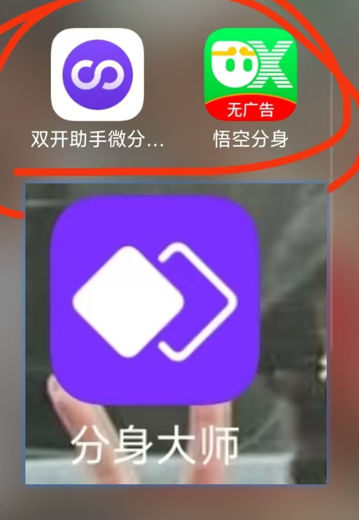
前面说有些软件有大量备号，mnet plus就是一个，不需要攒只需要投，所以希望大家都能积极参与进来
分身大师目前至少可以免费30天会员，双开助手微分身3天，悟空分身每天看广告即可一整天会员，各有优劣，也有其他合适的多开软件这里暂时不列
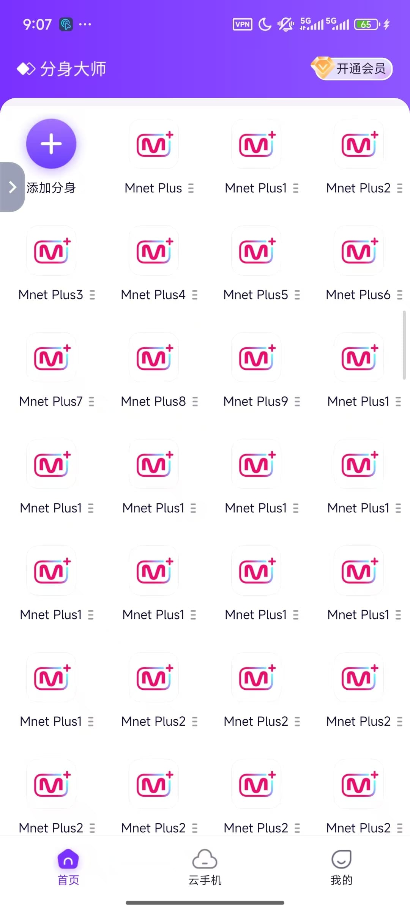
像这里即多开好了，为了点击器运行的运行，需要将多开的软件都添加到桌面
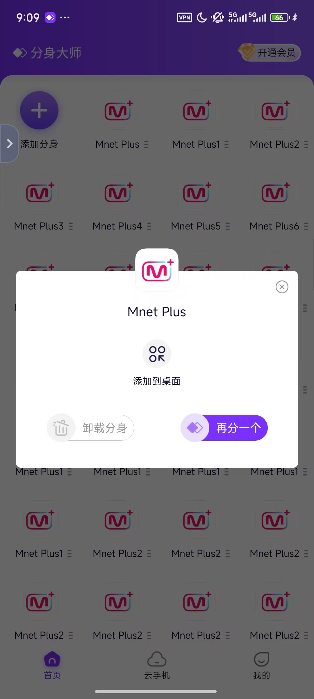
添加不了就去设置里面开启分身大师的桌面快捷方式的权限
像这样排好在桌面就好
自行调整是因为最下面分享出来的点击器脚本是适应创建者自己的手机分辨率和桌面排布和其他的，加上广告内容会改变，需要自行去加以修改
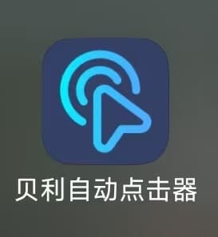
这里统一使用贝利自动点击器，安卓用户自带的应用商店应该就能下载
因为自动化所以需要开启相关权限和设置，所以请按下图修改
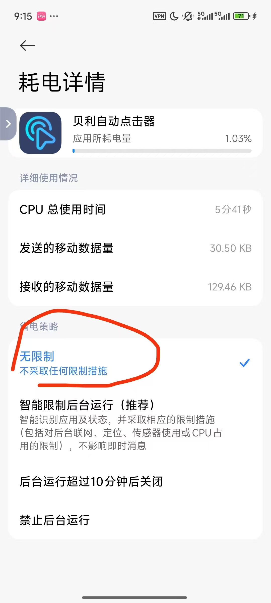
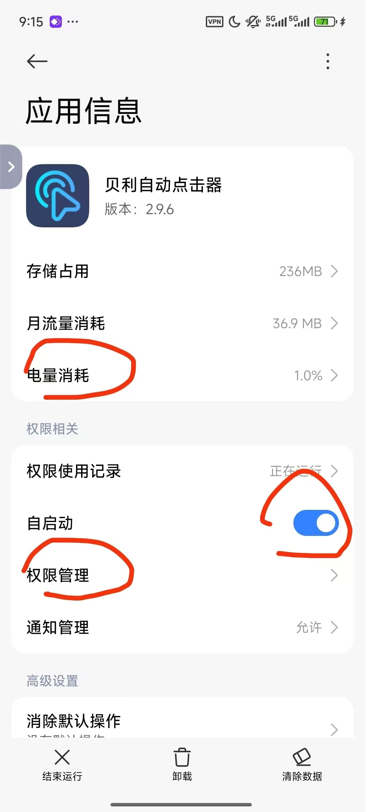
一般贝利自动点击器也会提示你开启这些设置，所以大家可以跟着APP里面的指示开好
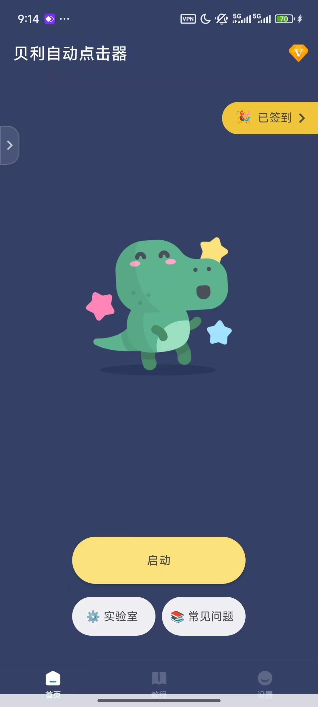
设置好之后应该就是这样子，中间的按键变成启动
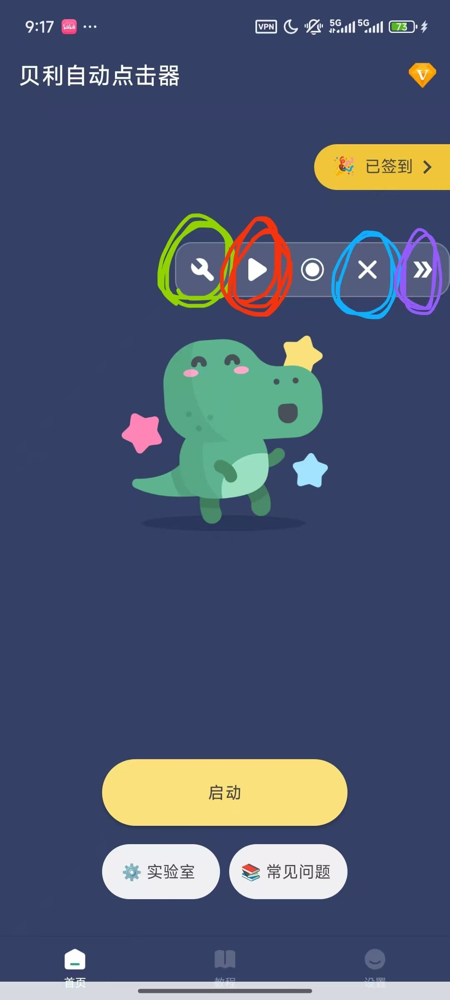
点击启动之后就会出现这样子的有五个按键的框，其中绿色圈的为最主要的，是设置点击器脚本的入口，红色圈的为启动脚本程序（前提是自己搞好了脚本❗也可通过别的启动程序）蓝色圈的为整个叉掉这个小框，紫色为收在一边，需要时候点出即可
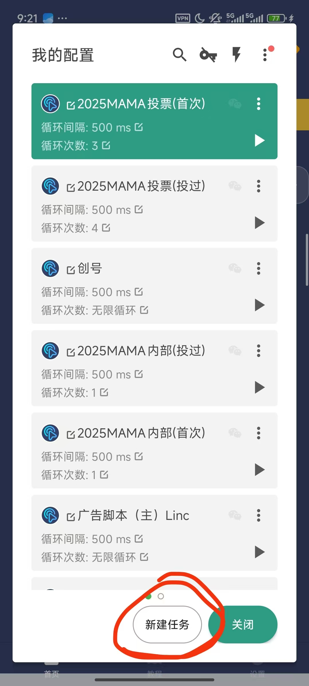
图为使用过的界面，新开的应该为空白，需要自己新建任务，这个界面下需要干别的事情必须要点击关闭键
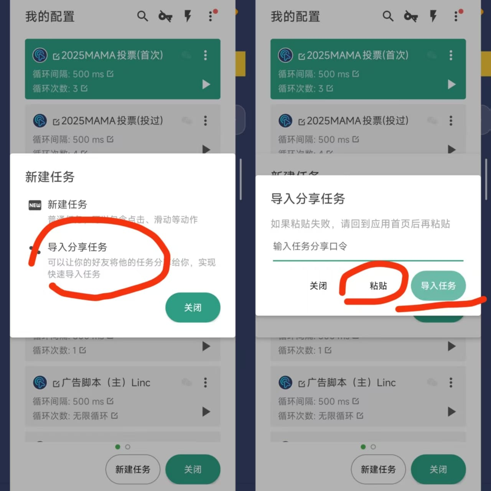
可以直接使用下面现成的脚本（但有的时候会出现分辨率导致运行时界面没反应的问题，那时候就只能自己创建了），直接复制，点击这里的导入分享任务输入就好了
下面分享的脚本导入后会出现好几个任务是因为一个任务里面包含了几个子任务（可以分模块完成任务，更方便）
教程写的很麻烦，不想看的话可以自己摸索一下，软件把每个功能都写得很清楚
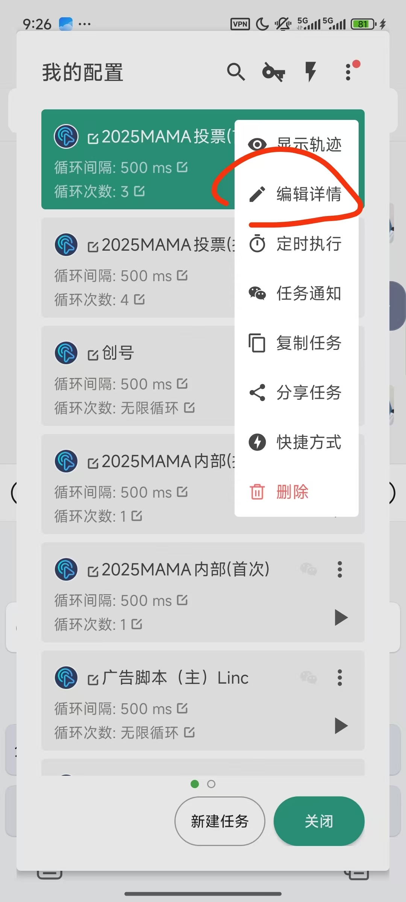
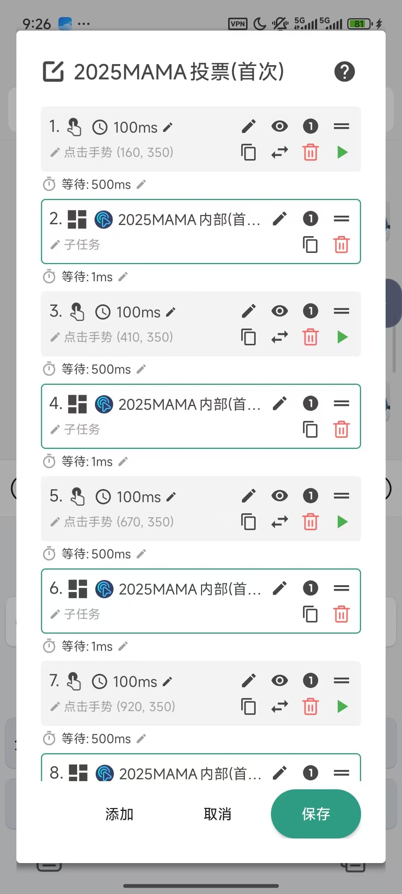
点击旁边的三点，再点击编辑详情即可看到这个（这里是主任务，可以看到里面循环夹着子任务）
除了子任务的点击手势即我设置的适应我手机分辨率的桌面上每个分身软件的位置，子任务执行主要的投票任务，然后再点击下一个图标，实现自己点击软件，自己投票再切换下一个多开的软件
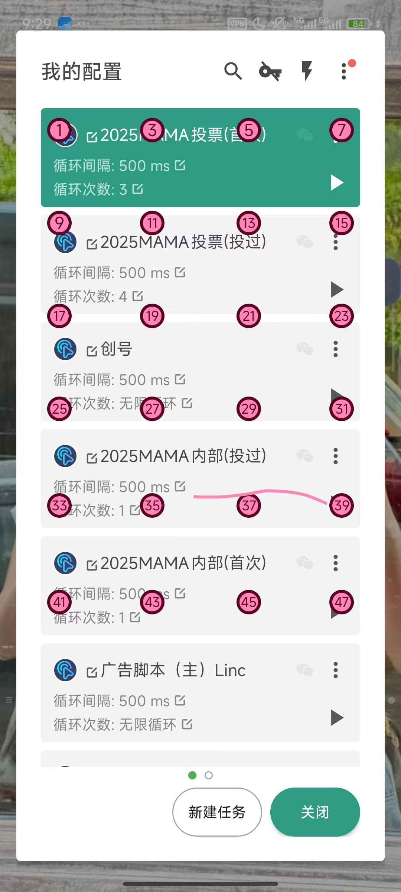
轨迹为这样，图上的一横为我设置的一页24个号都投完换下一页的手势，因为大家手机分辨率都不同所以可能导致不能点到相应图标然后出现错误，所以需要自行更改点击位置
这里拿第三个图标举例
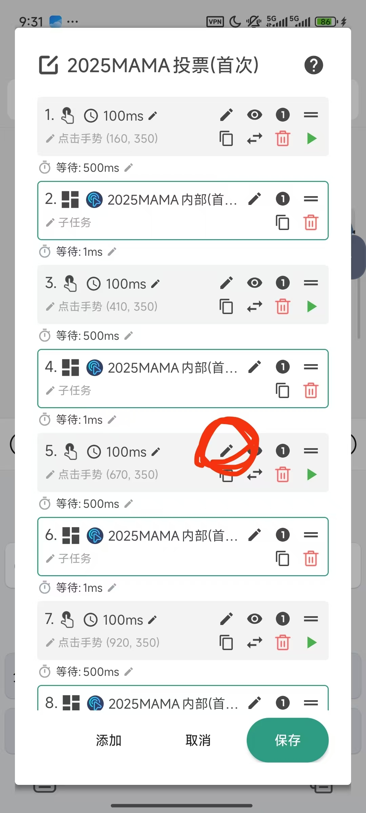
点击这个笔的符号，即可出现下面的页面，可以看到有图标锚定第三个分身，若自己点击之后发现没有锚定，则通过下面那个数字，输入之后试出自己的第三个软件在哪个位置再点击保存就改好了（一定要多试，确保每个都改好）
若想自己直接重新录制点击的位置或者其他手势
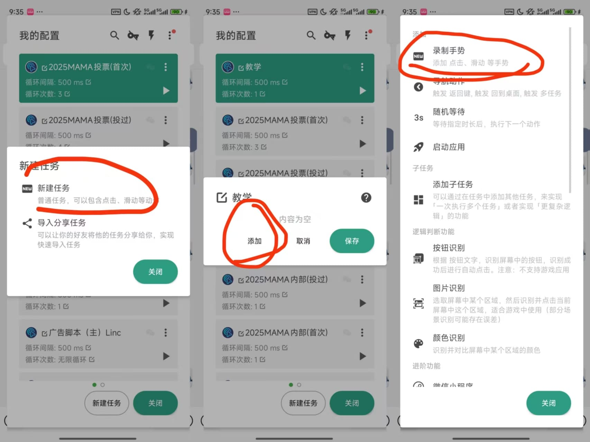
自己新建任务，任务名字的话自己起就好，再点击录制手势就好
每一步动作都会算一次，比如在页面点两下，再划两下即为四步
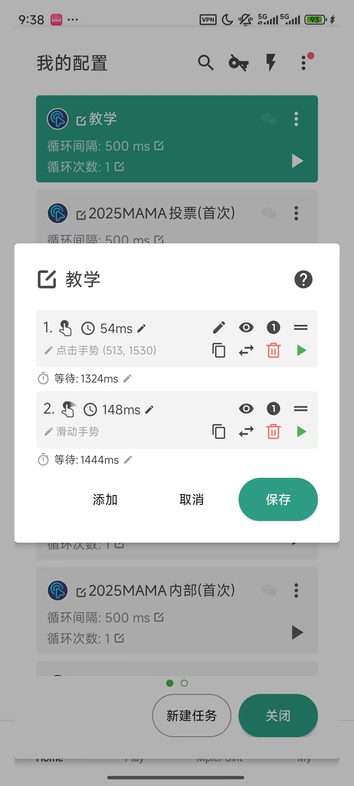
比如这里就是分别点击一下和划动一下，可以看到持续时间和等待时间都大不同，这些完全取决于你的做这些动作的过程，但是一样可以通过点击笔的图标进行修改
子任务主要使用了第三张这里的按钮识别
因为手机不同也会出现完全识别不了按钮的情况
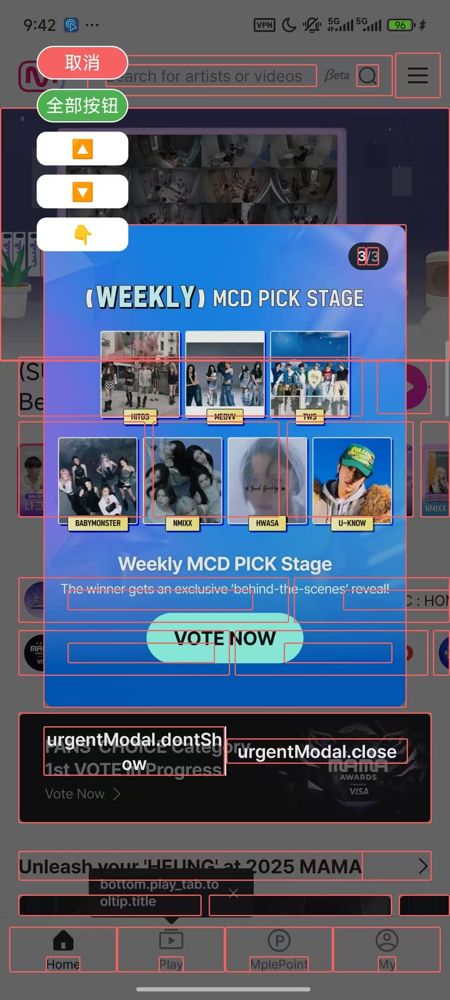
比如mnet plus一点进去的这个页面，因为要投票的继续，就要点击那个urgentModal.close关闭
按钮识别后即为这样，可以自行点击那个按钮或者使用左上角那个手的图标，直到绿框框到我们需要点击的那个按钮（推荐使用左上角寻找按钮，因为页面按钮经常是内外层都算，所以有时候甚至存在完全点不到按钮的情况），确定按钮后就会显示出该按钮的识别内容
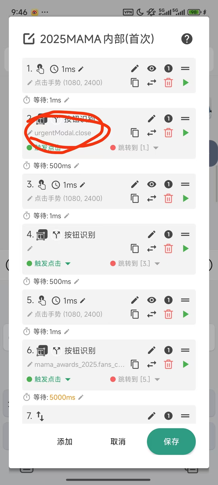
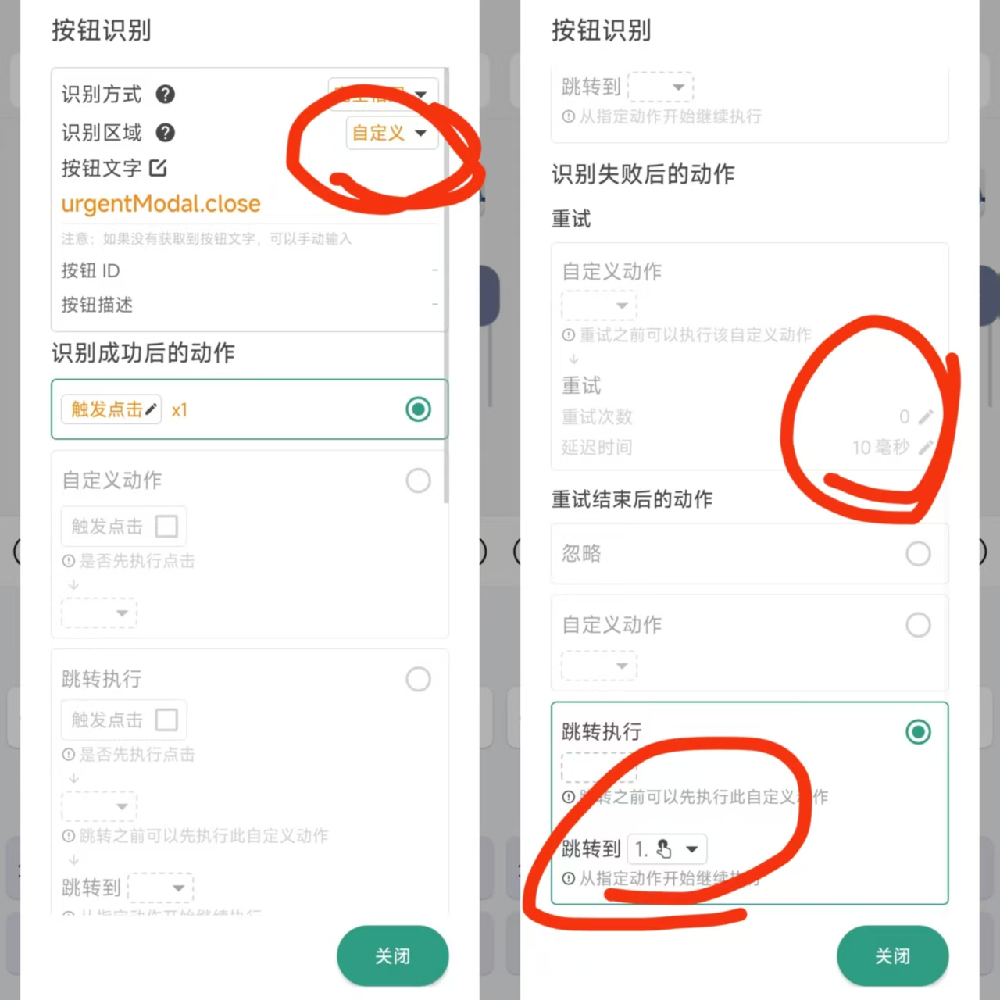
这里第一张图的自定义可以限制识别按钮的区域，提高识别精度与速度位，图二那的失败重试次数改为0
然后可以看到我设置失败的话跳转到步骤1
图上这里看到步骤1为一个点击步骤，为一个持续时间和等待时间都最短的步骤，设置这个是因为点击器是默认一顺溜执行下去，要是在没能识别的情况下快速过了会导致错误，这里点击的位置（1080，2400）为我手机页面的最右角，是不管怎么点都没有反应的地方，识别失败的话就能一直回到这一步，直到识别成功，做到所有步骤按顺序进行下去
不同的人的话可能那个右下角的位置不一样，可以按照上面的方法自行修改
建议是把每一步的按钮都自己识别一次确定下来，也不是所有的按钮识别都适合自定义识别区域，比如首次投票或者换投票对象时的选择
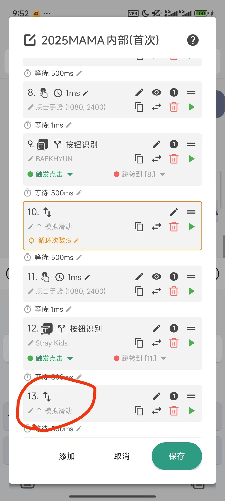
模拟划动点击下面的添加，划到下面找到这个即可，选人的话即为手指上滑，手机不同最好是自己逐个试试看看页面是否能停在需要选择的艺人名字那，然后按钮识别该艺人名字即可再继续下滑选择其他艺人
譬如我是进入选择页面后，划动一次即为第一个对象，再划动五次之后第二个，最后划动一次就是最后一个，选择好之后再按钮识别女艺人那，一样的办法试到小娃娃的位置即可（最好是识别艺人名字，所以要是跳过了可以灵活加一个录制手势，自己选择上滑多少直到找到选择对象）
我设置了截图保存投票页面，每投完一整页还会截图该页面再划到下一页重新开始任务，方便大家计数
有时候mnet会出现有广告的情况，如果不是会自己消失的广告就需要大家手动叉掉广告再继续了
【广告脚本（主）Higher】 [2552BD7B64205C43E09B5A5DDDDE43278A76B3D1D041B00C1EDF410DFF31E73A288C24794CE6BBAFA9DEEE741306A56D3BF8B4CD6E7A523C1213254494A60FF36B9B6A187DF5C332E341E1C84917C329] 复制任务分享口令，然后在配置列表中，点击创建任务按钮，再点击导入分享任务按钮，粘贴进去，就可以快速导入这个任务 下载地址：https://a.app.qq.com/o/simple.jsp?pkgname=com.ksxkq.autoclick
上面这一部分全部复制粘贴即可，下面的也一样
【广告脚本（主）Mubeat】 [2552BD7B64205C43E09B5A5DDDDE43278A76B3D1D041B00C1EDF410DFF31E73A27546A3837A42FCBDE606D034CD207333EC9EBADBBB8A854CA650A1ED29A589DBE05517DF17FCEA8F80CECED26C292CD] 复制任务分享口令，然后在配置列表中，点击创建任务按钮，再点击导入分享任务按钮，粘贴进去，就可以快速导入这个任务 下载地址：https://a.app.qq.com/o/simple.jsp?pkgname=com.ksxkq.autoclick
【广告脚本（主）Linc】 [2552BD7B64205C43E09B5A5DDDDE43278A76B3D1D041B00C1EDF410DFF31E73ADCD51516EB1B2B2D3B167FD01FAF97126929B500A2FDB704060F077027A80EB697B4BBA2239692AD6B5147D872E33E9F] 复制任务分享口令，然后在配置列表中，点击创建任务按钮，再点击导入分享任务按钮，粘贴进去，就可以快速导入这个任务 下载地址：https://a.app.qq.com/o/simple.jsp?pkgname=com.ksxkq.autoclick
点击目录或底部链接，平滑跳转至对应板块。